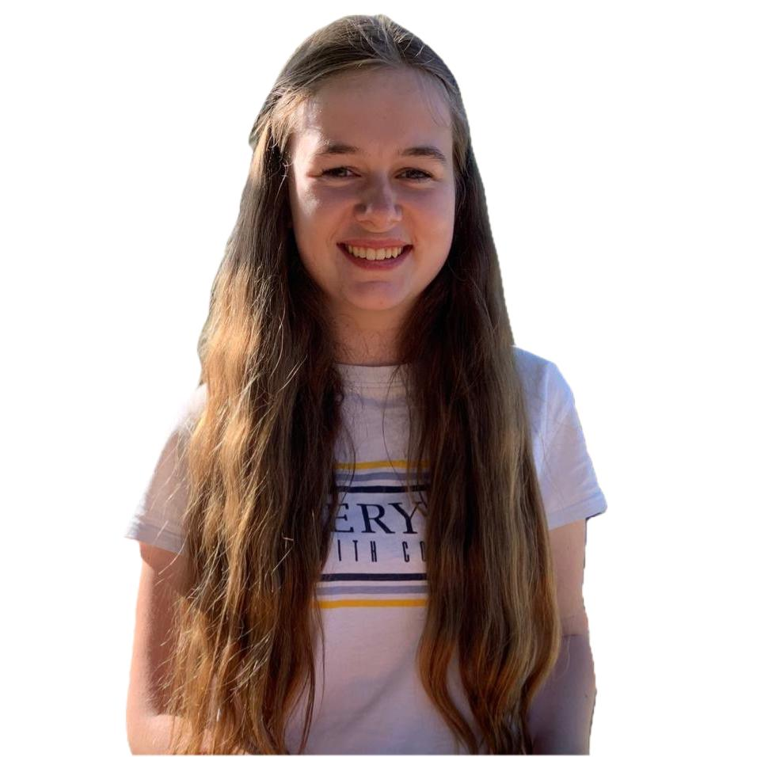

Medieninformatik ·
Softwareentwicklung
Ich entwickle Software mit Fokus auf Webtechnologien & UI/UX.
Absolventin der Medieninformatik mit Schwerpunkt Softwareentwicklung und praktischer Erfahrung durch Studien- und Eigenprojekte.
Über mich
Medieninformatik trifft Softwareentwicklung
Ich bin Absolventin der Medieninformatik mit einem Schwerpunkt auf Softwareentwicklung. Während meines Studiums und durch eigene Projekte konnte ich praktische Erfahrungen im gesamten Softwareentwicklungsprozess sammeln. Von der Anforderungsanalyse und Konzeption über die Implementierung und Evaluation. Dabei immer mit einem nutzerzentrierten Ansatz und einem Blick für Gebrauchstauglichkeit.
Besonders interessieren mich die Entwicklung moderner Webanwendungen, nutzerzentrierter Interfaces und die Verbindung von Technologie und Design.
Ausbildung
Bachelor of Science
Medieninformatik
Universität zu Lübeck 10/2019-09/2025
Abschlussnote 2,4
Software Engineering, Neue Webtechnologien, Usability Engineering, Interaktionsdesign, Datenbanken
Kenntnisse
Skills
Webentwicklung
- HTML
- CSS
- JavaScript
- TypeScript
- React
- Vue.js
- PHP
- Node.js
- MySQL
- REST APIs
Programmierung
- Java
- Python
- C#
- C/C++
Tools & Entwicklung
- Git
- GitHub
- Vite
- Maven
- Docker
- Arduino
- Unity
- VS Code
- Visual Studio
UI/UX & Kommunikation
- Figma
- Axure RP
- Usability Engineering
- Interaktionsdesign
- Deutsch
- Englisch
- Spanisch
Projekte
Eine Auswahl aus Studienprojekten, meiner Bachelorarbeit und eigenen Projekten.